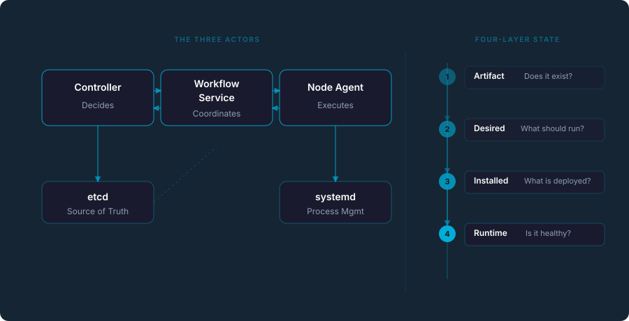

Infrastructure You Can
Understand
An open-source platform for deploying and operating distributed systems.
Explicit workflows. Deterministic state. Native binaries. No containers, no magic.

An open-source platform for deploying and operating distributed systems.
Explicit workflows. Deterministic state. Native binaries. No containers, no magic.

“Globular did not start as a product. It started as frustration. Frustration with systems that are powerful, but hard to reason about.”
Modern infrastructure hides complexity behind layers of abstraction. When things go wrong, you dig through scattered logs, guess at invisible controller behavior, and hope the system eventually converges.
Globular takes a different approach: expose complexity, organize it, and make it predictable. Every change is traceable. Every failure is explained. Every action flows through an explicit workflow.
The result? A system you can actually understand. And once you understand your system, you can trust it.
Every state change, every workflow step, every failure is visible and queryable. No black boxes.
No invisible reconciliation loops. Every operation is a formal workflow with classified failure handling.
The same input always produces the same outcome. Reproducible deployments, predictable convergence.
Not another Kubernetes. A fundamentally different approach to distributed systems.
Artifact → Desired → Installed → Runtime. Four independent layers, each with its own owner. Never confuse “should be running” with “is running.”
Every cluster mutation flows through a recorded workflow. Each step has an actor, action, and classified result. Full audit trail, automatic retries with backoff.
No containers, no image registries, no overlay networks. Statically-linked Go binaries running under systemd. Debug with standard Linux tools.
All configuration, endpoints, desired state, and cluster membership in one place. No env vars, no config files, no hidden state. Query everything.
Because everything is explicit and observable, AI can reason about your system, not guess from logs. Built-in AI services for diagnosis, remediation, and learning.
mTLS between all components. JWT + RBAC with per-resource permissions. Ed25519 signatures. No token storage in etcd. Everything goes through the interceptor chain.
Three actors, four layers, one source of truth.
“Does this version exist?” — Packages are built, signed, and published to the repository. Versioned and immutable.
“What should be running?” — The cluster controller writes desired state to etcd. This is the declaration of intent.
“What is actually deployed?” — Node agents report what they have installed. Drift between desired and installed triggers convergence.
“Is it running and healthy?” — Real-time health checks, metrics, and liveness probes. The ground truth.
Different problems, different philosophy. Globular is not a Kubernetes replacement — it's an alternative for teams that don't need containers.
| Aspect | Kubernetes | Globular |
|---|---|---|
| Unit of deployment | Container image | Native binary (statically linked) |
| Process supervisor | kubelet + container runtime | systemd |
| Reconciliation | Invisible control loops | Explicit workflows with audit trail |
| Failure diagnosis | Scattered across events, logs, conditions | Unified workflow history, classified failures |
| Configuration | ConfigMaps, Secrets, env vars | etcd only (single source of truth) |
| Scheduling | Pod scheduler | Profile-based assignment (explicit) |
| Minimum footprint | Control plane + container runtime | Single binary + etcd + systemd |
| AI integration | External log/metric analysis | Built-in: state is explicit, AI reasons natively |
A five-part audio introduction. 20 minutes to understand the entire system.
The origin story — frustration with opaque systems
2The 4-layer state model, workflows, and three actors
3Day-to-day: deploying, debugging, thinking in state
4Failure handling, drift detection, convergence
5AI as a constrained operator, not a black box
Full control over your hardware. No cloud dependency. Run on bare metal with systemd.
Go, Rust, C++ binaries that don't need container isolation. Smaller footprint, simpler debugging.
Lightweight enough for edge nodes. No container runtime overhead. Native performance.
Ship a self-managing cluster. Your customers get a product, not infrastructure homework.
From zero to a running cluster in 15 minutes. One machine, one command.
curl -fsSL https://globular.io/install.sh | bash
globular cluster bootstrap